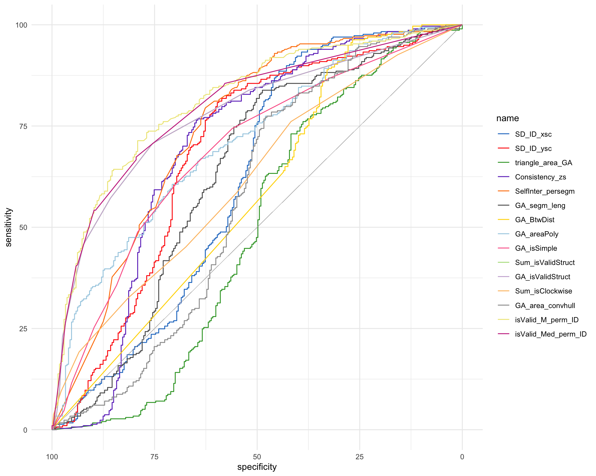
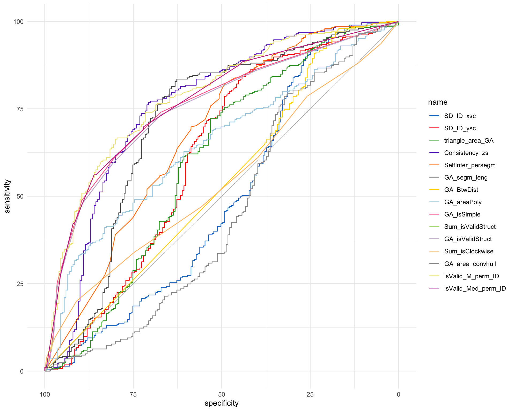
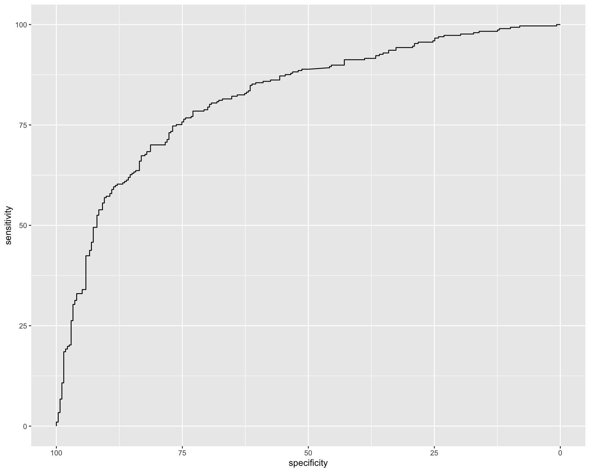
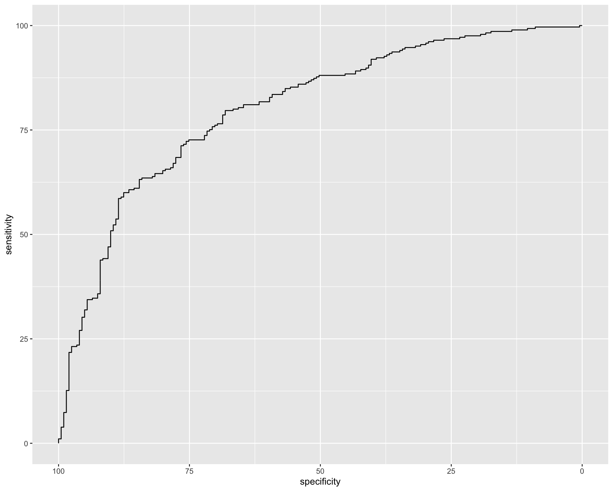
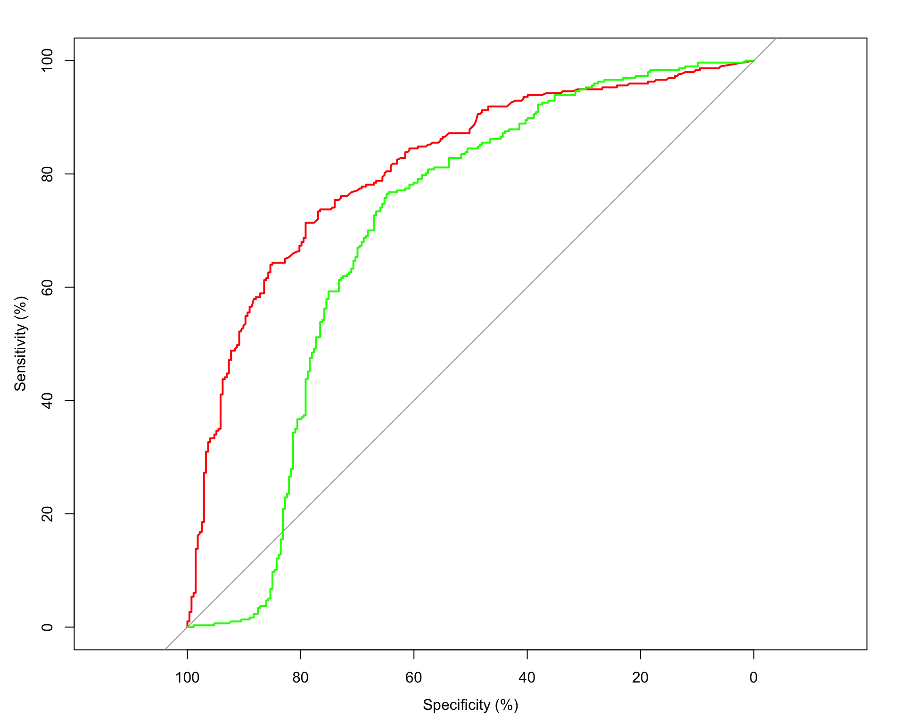
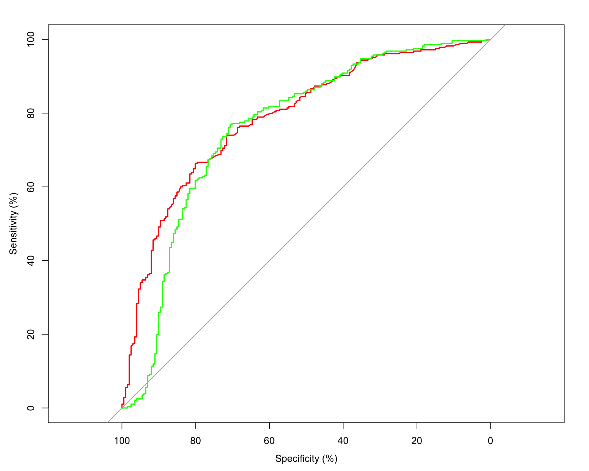
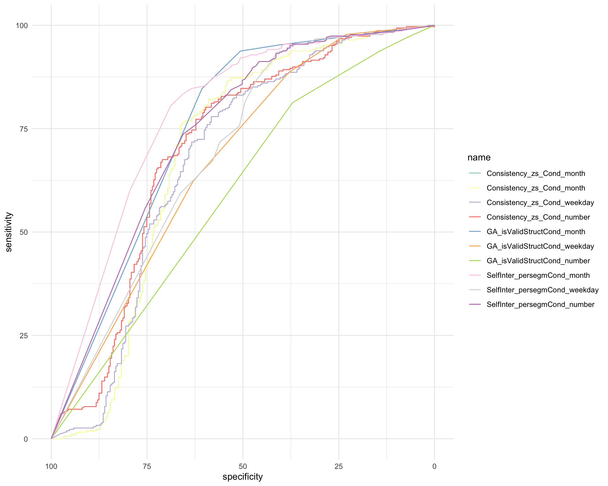
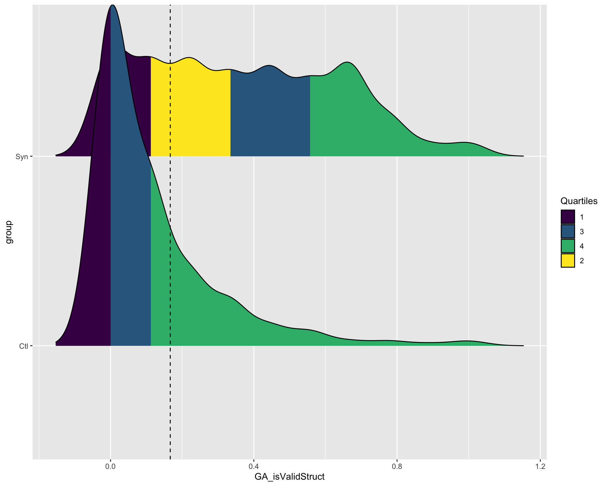

[1] 0Pre-registered report: Space Sequence Synesthesia Diagnostic using form mapping
1 Abstract:
Existent diagnostic tools for space sequence synethesia are based on questionnaire and response consistency. Consistency is calculated as the area between repetitions for the same inducer. In the first present phase, available data from 467 participants is used to explore new geometrical features to discriminate syntheses from controls. Conceptually, our goal is to take advantage of the inducer’s ordinality that create synesthetic forms. For this aim, we harness a geography package to extract geometrical features to use as a test for synethesia. Reciever Operator Characteristics are used to select the features that best diagnose synesthesia. In a second phase to come, we test the predictive power of the new diagnostic features onto newly collected dataset.
2 Introduction
Humans with Sequence Space Synesthesia (SSS) represent ordered sequences in particular spatial positions. For example, August (i.e. the inducer) might be represented in the bottom left position (i.e. the position is here the concurrent), this position is relative to the concurrent position of the other months which could form a circle all together. In addition time units, numbers also take particular forms (Galton 1880), not to be confused with the Mental Number Line [Dehaene to be found]. These forms are idiosyncratic, meaning they might vary across individuals. This makes it difficult to detect authentic SSS and therefore give precise estimates of prevalence in the population. Estimated prevalence for SSS in the general population spans between 4.4 % (Brang et al. 2013) and 14.2 % (Seron et al. 1992), see also (Ward et al. 2018; Sagiv et al. 2006). Hence a reliable diagnostic tool to detect SSS would also be useful to investigate SSS.
Diagnostic depends on the definition of the conditions under investigation. A strict definition of Synestheesia requires five different criteria (Deroy and Spence 2013). Automaticity: the inducer automatically triggers the concurrent. For example august might automatically trigger it’s specific spatial location. Unidirectionality: while the inducer triggers the concurrent, the concurrent does not trigger the inducer. Hence the bottom left position doe not trigger August. Consciousness: The concurrent is consciously percieved. Developmentally early: the experience was already present during childhood. Consistency: the inducer-concurrent pair remains stable in time. For example, August triggers the same bottom left position. Consistency is arguably the most suited criteria to develop a diagnostic tool since it is relatively simple to implement in a behavioral task and quantify.
Hence given consistency, similar concurrent responses triggered by the same inducers can be used as a marker for authentic SSS. Consistency test have become golden standart for colour-grapheme synesthesia, where an inducer is presented (i.e. letters of the alphabet) and the participant is requested to selected the concurrent colour, using a colour picker. Individual consistency is then calculated as the distance between repeated colour responses to the same inducers. Interestingly, the best colour space to detect colour-grapheme synesthesia is CIE*LUV, a colour space developed to be isoform to human perception (Rothen et al. 2013). Analogously to grapheme-colour synesthetes, consistency test can be used to diagnose SSS. In that tasks, it is repeatedly asked to report the position of the inducers on a screen. The total area between the responses of same inducer (i.e. a triangle if repeated three times) is then used as characteristic to diagnose SSS. The rationale being that consistent responses would lead to smaller area than inconsistent ones (Rothen et al. 2016). This method resembles how number forms are describe in the single case study (Piazza, Pinel, and Dehaene 2006), see Experiment 1.
However characterizing synesthetes from non synesthetes using total area has several limitations. For example high consistency by non-synesthetes can be achieved by giving all responses on the same screen position (i.e. false positive). Moreover, this kond of criteria might bias the diagnosis to include synesthetes with straigth lines which leads to less variability than more complex forms(Ward?).
The goal of the present registered report is to first identify new features characterizing synesthetes responses based on already available datasets and test the best working features on a future dataset. The new features are desgined to take advantage of two properties of synesthetic responses that have not been included in precedent consistency tests. First, sequentiality on top of single inducer responses the ordered position between subsequent induces is important. For example the relative position of August and the other months. From numerical cognition, ordinality has been aknowledged to be an important semantic property of numbers, also given their sequential acquisition (i.e. 1 is learned before 2). Second, thee particular synthetic forms of the sequential spatial location. These forms might have geometrical properties. For example months of the year might be represented circularly (as already described by (Galton 1880) for numbers).
To take advantage of sequential and geometrical synesthetic forms, we harnessed a geo-spatial package(Pebesma 2018) to extract geometrical features from participant x and y coordinate responses. This packages allows for example to build string or polygons for each repetition and compare different geometrical features. Those individual geometrical features are then compared using Receiver Operator Charactheristics (ROC) between individuals grouped as synesthes and control. In the present phase I,we compare ROC on three merged derivationdatasets using the same task on SSS Ward (n.d.a). In future phase II, we compare whether the features selected to diagnose SSS in phase I, on a validation dataset that is not yet acquired (registered report on the open science foundation: https://osf.io/9efjb/).
3 Methods
Phase I: present analyses. We merge three available dataset and compared available diagnostic criteria across datasets using Reciever Operator Charachteristics (ROC) for different approaches. A first approach of diagnostic criteria based on a stimulus level consistency. The rationale being that synesthetes should produce more consistent (i.e. less variable) across repetitions. Such criteria include area between repetitions1, standard deviation of responses [@ward] or permuted responses (Root et al. 2025)? . The second suggested approach is to look at the geometrical form generated by the responses across repetitions. The rationale here is that synestetic responses should have geometrical feature that differ from controls. For example, several SSS representations for months are circular. For the form
Third, we compare wheter the featuers lead to somilar ROC charachteristics across the different sets (i.e. for months, weeks and numbers). Fourth, we compute new candidate geometrical features that could be used to diagnose SS. Finally we summarize and compare all ROC and select the best features that class synesthetes from control with the merged dataset.
Phase II: future analyses. On a future dataset using the same task, we will compare the predictive power of the selected features using ROC.
3.1 Materials
A the exception of (Rothen et al. 2016) (see https://osf.io/6hq94/files/osfstorage), the data from (Ward, n.d.a; Van Petersen et al. 2020a) were collected online. The 29 inducers were: the 12 months of a year, 7 days of the week and 10 numbers (i.e. hindo-arabic numerals from 0 to 9). (Van Petersen et al. 2020a) Also presented 50 and 100 numerals, which we excluded here. (Ward, n.d.a) data is collected using the Syntoolkit.
3.2 Procedure
The details for each procedure is described in each respective article (Rothen et al. 2016; Ward, n.d.a; Van Petersen et al. 2020a), here we describe the common task.
Each participant is presented with one one inducer at a time at the center of a otherwise white screen. The participant is instructed to click at the screen position that they visualize them. Inducers order is randomized and each inducer is repeated three times.
The order of the stimuli was randomised, but such that no stimulus was repeated until the previous batch of unique stimuli (N = 29) had been presented.
4 Phase I Methods
The data for phase I, comes from: (Rothen et al. 2016),(Ward, n.d.a) (from: https://osf.io/p5xsd/files/osfstorage) and (Van Petersen et al. 2020b)
- Root (Root et al. 2021)
# A tibble: 2 × 2
group n
<fct> <int>
1 Ctl 72
2 Syn 124.1 Phase I. Population
For all the three datasets, the synesthetes were self-reported.
| Source | Synesthetes | Controls | Total | Age | n females |
|---|---|---|---|---|---|
| (Rothen et al. 2016) | 33 | 37 | 70 | 23.1; 28.2 (ctl) | 24; 27 (ctl) |
| (Van Petersen et al. 2020b) | 23 | 21 | 44 | 23.22; 21.57 (ctl) | 20; 19 (ctl) |
| (Ward, n.d.b) | 252 | 215 | 467 | 37.21; 19.90 (ctl) | 202; 178 (ctl) |
| Merged | 308 | 273 | 557 |
4.2 Phase I. Analysis
First, we replicate consistency methods found in the literature using the same task ((Rothen et al. 2016; Ward, n.d.a; Van Petersen et al. 2020a; Root et al. 2021)) and compare the results.
Second, we extract features based on the form. (C) We harness a geography package to compute segment based features (D) We compute polygon based features. (E) Convex Hull (F) Angles.
5 Phase I. Results Reproduce
6 Replicated features
6.1 Standart deviation
6.2 Triangle area Consistency
Definition: Calculating consistency Each stimulus is represented by three xy coordinates - (x1, y1), (x2, y2), (x3, y3) - from the three repetitions. For each stimulus, the area of the triangle bounded by the coordinates is calculated as follows:
\(Area = (x1y2 + x2y3 + x3y1 – x1y3 – x2y1 – x3y2) / 2\)
`summarise()` has grouped output by 'ID'. You can override using the `.groups`
argument.Warning in rm(tmp_perID): object 'tmp_perID' not found7 Phase I. Results: Novel features
7.1 Segment self-intersection
The first feature is self-intersections. For each condition and repetition separately, we count how many times the segments self-intersects. Then we average across conditions and repetitions to have one value per subject. Hence the value represents the average number of self-intersections per segment a subject has.
7.2 Segments (with sf)
We will take advantage of the sf package and connect the x and y coordinates of ordered inducer with a segment. Sf hates NaN’s. Either convert them to 0 (as originally) or remove them. I’ll start converting to 0.
Linking to GEOS 3.13.0, GDAL 3.8.5, PROJ 9.5.1; sf_use_s2() is TRUESpherical geometry (s2) switched offWarning: Using one column matrices in `filter()` was deprecated in dplyr 1.1.0.
ℹ Please use one dimensional logical vectors instead.7.2.1 Segment length (should replicate Rothen)
8 Distances between repetitions
8.1 Polygon based geometries
8.1.1 Polygon area
9 Polygon simplicity
10 Topological validity Structure
is topologically valid:
From the package description: “For projected geometries, st_make_valid uses the lwgeom_makevalid method also used by the PostGIS command ST_makevalid if the GEOS version linked to is smaller than 3.8.0, and otherwise the version shipped in GEOS; for geometries having ellipsoidal coordinates s2::s2_rebuild is being used.” From https://postgis.net/docs/ST_IsValid.html: value is well-formed and valid in 2D according to the OGC rules. (Open Geopsatial Consotrtium)
10.1 is clockwise
10.2 Convex Hull Area
11 Permutations
Until now the form based features are computed by chronologically ordered repetitions. For example, Monday is repeated three times per ID. The coordinates for Monday presented the first time will always be used to form the segment/polygon with the Tuesday presented the first time. However, for consistency, this should be independent from chronological order. To circumvent this, we can permute the repetitions per conditions. I predict the permuted averages of the same features should give rise to better AUC. Since these are time consuming I will only apply permutations on the criteria that are at stake:
topological validity.
12 Compare all features:
12.1 Compute all ROC
[,1] [,2] [,3] [,4]
feature_list "SD_ID_xsc" "SD_ID_ysc" "triangle_area_GA" "Consistency_zs"
feature_direction "moreSyn" "moreSyn" "moreCtl" "moreCtl"
[,5] [,6] [,7] [,8]
feature_list "SelfInter_persegm" "GA_segm_leng" "GA_BtwDist" "GA_areaPoly"
feature_direction "moreCtl" "moreCtl" "moreCtl" "moreSyn"
[,9] [,10] [,11]
feature_list "GA_isSimple" "Sum_isValidStruct" "GA_isValidStruct"
feature_direction "moreSyn" "moreSyn" "moreSyn"
[,12] [,13] [,14]
feature_list "Sum_isClockwise" "GA_area_convhull" "isValid_M_perm_ID"
feature_direction "moreSyn" "moreSyn" "moreSyn"
[,15]
feature_list "isValid_Med_perm_ID"
feature_direction "moreSyn" Setting levels: control = Ctl, case = Syn
Setting levels: control = Ctl, case = Syn
Setting levels: control = Ctl, case = Syn
Setting levels: control = Ctl, case = Syn
Setting levels: control = Ctl, case = Syn
Setting levels: control = Ctl, case = Syn
Setting levels: control = Ctl, case = Syn
Setting levels: control = Ctl, case = Syn
Setting levels: control = Ctl, case = Syn
Setting levels: control = Ctl, case = Syn
Setting levels: control = Ctl, case = Syn
Setting levels: control = Ctl, case = Syn
Setting levels: control = Ctl, case = Syn
Setting levels: control = Ctl, case = Syn
Setting levels: control = Ctl, case = Syn
Setting levels: control = Ctl, case = Syn
Setting levels: control = Ctl, case = Syn
Setting levels: control = Ctl, case = Syn13 Summaries
13.1 Summary table:
Attaching package: 'kableExtra'The following object is masked from 'package:dplyr':
group_rows| Feature | AUC | threshold | sensitivity | specificity | ppv | npv | ci_low | ci_high | |
|---|---|---|---|---|---|---|---|---|---|
| 13 | isValid_M_perm_ID | 81.21 | 0.15 | 71.38 | 79.12 | 78.81 | 71.76 | 77.68 | 84.75 |
| 14 | isValid_Med_perm_ID | 79.66 | 0.14 | 67.34 | 79.49 | 78.13 | 69.11 | 76.10 | 83.22 |
| 9 | Sum_isValidStruct | 77.85 | 1.50 | 70.71 | 75.46 | 75.81 | 70.31 | 74.12 | 81.57 |
| 10 | GA_isValidStruct | 77.85 | 0.17 | 70.71 | 75.46 | 75.81 | 70.31 | 74.12 | 81.57 |
| 4 | SelfInter_persegm | 74.26 | 1.17 | 79.46 | 62.64 | 69.82 | 73.71 | 70.13 | 78.38 |
| 7 | GA_areaPoly | 70.91 | 1.29 | 60.61 | 70.7 | 69.23 | 62.26 | 66.72 | 75.11 |
| 3 | Consistency_zs | 69.81 | 2.22 | 76.43 | 64.84 | 70.28 | 71.66 | 65.22 | 74.40 |
| 8 | GA_isSimple | 68.78 | 0.28 | 60.94 | 69.6 | 68.56 | 62.09 | 64.46 | 73.10 |
| 1 | SD_ID_ysc | 68.68 | 0.12 | 80.81 | 59.71 | 68.57 | 74.09 | 64.13 | 73.22 |
| 5 | GA_segm_leng | 63.07 | 7.86 | 83.84 | 48.72 | 64.01 | 73.48 | 58.34 | 67.81 |
| 11 | Sum_isClockwise | 61.73 | 2.50 | 76.09 | 41.76 | 58.70 | 61.62 | 57.19 | 66.27 |
| 6 | GA_BtwDist | 57.9 | 0.03 | 96.3 | 26.74 | 58.85 | 86.90 | 53.68 | 62.12 |
| 12 | GA_area_convhull | 56.88 | 1.49 | 76.77 | 48.35 | 61.79 | 65.67 | 51.96 | 61.80 |
| 2 | triangle_area_GA | 49.26 | 2338.97 | 76.09 | 38.83 | 57.51 | 59.89 | 44.27 | 54.25 |
13.2 Summary plot
Warning: Using `size` aesthetic for lines was deprecated in ggplot2 3.4.0.
ℹ Please use `linewidth` instead.
14 Summary excluding overlapping responses
Setting levels: control = Ctl, case = Syn
Setting levels: control = Ctl, case = Syn
Setting levels: control = Ctl, case = Syn
Setting levels: control = Ctl, case = Syn
Setting levels: control = Ctl, case = Syn
Setting levels: control = Ctl, case = Syn
Setting levels: control = Ctl, case = Syn
Setting levels: control = Ctl, case = Syn
Setting levels: control = Ctl, case = Syn
Setting levels: control = Ctl, case = Syn
Setting levels: control = Ctl, case = Syn
Setting levels: control = Ctl, case = Syn
Setting levels: control = Ctl, case = Syn
Setting levels: control = Ctl, case = Syn
Setting levels: control = Ctl, case = Syn
Setting levels: control = Ctl, case = Syn
Setting levels: control = Ctl, case = Syn
Setting levels: control = Ctl, case = Syn| Feature | AUC | threshold | sensitivity | specificity | ppv | npv | ci_low | ci_high | |
|---|---|---|---|---|---|---|---|---|---|
| 13 | isValid_M_perm_ID | 78.7 | 0.20 | 66.32 | 80.1 | 82.53 | 62.65 | 74.61 | 82.78 |
| 14 | isValid_Med_perm_ID | 77.09 | 0.31 | 56.14 | 86.07 | 85.11 | 58.05 | 72.98 | 81.20 |
| 3 | Consistency_zs | 76.08 | 2.22 | 76.84 | 70.65 | 78.78 | 68.27 | 71.49 | 80.67 |
| 8 | GA_isSimple | 75.92 | 0.28 | 60.7 | 80.6 | 81.60 | 59.12 | 71.70 | 80.13 |
| 9 | Sum_isValidStruct | 75.38 | 1.50 | 73.33 | 67.16 | 76.00 | 63.98 | 71.13 | 79.64 |
| 10 | GA_isValidStruct | 75.38 | 0.17 | 73.33 | 67.16 | 76.00 | 63.98 | 71.13 | 79.64 |
| 5 | GA_segm_leng | 71.2 | 7.86 | 83.51 | 62.69 | 76.04 | 72.83 | 66.15 | 76.25 |
| 4 | SelfInter_persegm | 67.85 | 1.17 | 82.11 | 49.25 | 69.64 | 66.00 | 62.89 | 72.80 |
| 7 | GA_areaPoly | 64.78 | 1.92 | 41.05 | 83.08 | 77.48 | 49.85 | 59.90 | 69.66 |
| 1 | SD_ID_ysc | 61.49 | 0.11 | 84.21 | 44.28 | 68.18 | 66.42 | 56.11 | 66.88 |
| 2 | triangle_area_GA | 60.27 | 2124.47 | 72.28 | 53.23 | 68.67 | 57.53 | 54.88 | 65.65 |
| 11 | Sum_isClockwise | 54.22 | 6.50 | 20 | 91.04 | 76.00 | 44.53 | 49.14 | 59.29 |
| 6 | GA_BtwDist | 54.03 | 0.03 | 97.54 | 17.41 | 62.61 | 83.33 | 49.40 | 58.66 |
| 12 | GA_area_convhull | 45.45 | 1.49 | 78.6 | 32.34 | 62.22 | 51.59 | 39.93 | 50.96 |
14.1 Summary plot

15 Combination ROC
Setting levels: control = Ctl, case = SynSetting direction: controls < cases
Call:
roc.default(response = ds_Q$group, predictor = ds_Q$Comb)
Data: ds_Q$Comb in 273 controls (ds_Q$group Ctl) < 297 cases (ds_Q$group Syn).
Area under the curve: 0.8183Setting levels: control = Ctl, case = Syn Feature AUC threshold sensitivity specificity ppv npv ci_low
1 Comb 81.8342 -0.1362282 74.74747 76.92308 77.89474 73.68421 78.36145
ci_high
1 85.30698Setting levels: control = Ctl, case = Syn
Setting levels: control = Ctl, case = Syn
Setting direction: controls < cases
Call:
roc.default(response = ds_Q2$group, predictor = ds_Q2$Comb)
Data: ds_Q2$Comb in 201 controls (ds_Q2$group Ctl) < 285 cases (ds_Q2$group Syn).
Area under the curve: 0.8025Setting levels: control = Ctl, case = Syn Feature AUC threshold sensitivity specificity ppv npv ci_low
1 Comb 80.2531 0.2922101 72.2807 75.62189 80.78431 65.80087 76.30977
ci_high
1 84.19647Setting levels: control = Ctl, case = Syn
16 Could compare each feature singularly:
Setting levels: control = Ctl, case = SynSetting direction: controls < casesSetting levels: control = Ctl, case = SynSetting direction: controls > cases
Bootstrap test for two correlated ROC curves
data: ROC_Valid and ROC_Cons
D = 4.4714, boot.n = 2000, boot.stratified = 1, p-value = 7.772e-06
alternative hypothesis: true difference in AUC is not equal to 0
sample estimates:
AUC of roc1 AUC of roc2
81.21138 69.80982 Setting levels: control = Ctl, case = SynSetting direction: controls < casesSetting levels: control = Ctl, case = SynSetting direction: controls > cases
Bootstrap test for two correlated ROC curves
data: ROC_Valid and ROC_Cons
D = 1.1777, boot.n = 2000, boot.stratified = 1, p-value = 0.2389
alternative hypothesis: true difference in AUC is not equal to 0
sample estimates:
AUC of roc1 AUC of roc2
78.69512 76.07576 16.1 Phase II Methods
16.2 Phase II Materials:
Materials are desribed here https://osf.io/pjb6e/?view_only=d467ebf4c1f94076ae4ac61298255065.
16.3 Phase II Planned population
17 Discussion
From the different features we extracted, topological validity across the repetitions appeared to be the one leading to the largest Area Under the Curve. The optimal cutoff was exactly 1.5, leading to a sensitivity () and specificity ().
The optimal criterion ineeds to be informed about the order between inducers (i.e. to construct the polygons) and interestingly suggests that synthetic inducer are structurally mapped following topological rules analogous to geographical space structures. Hence suggesting a spatial nature for the synthetic forms of space sequence synesthetes.
18 Supplementary: Permute repetitions
Until now the form based features are computed by chronologically ordered repetitions. For example, Monday is repeated three times per ID. The cooridinates for monday presented the first time will alawys be used to form the segment/polygon with the tuesday presented the first time. However, for consistency, this should be independent from chronological order. To circumvent this, we can permute the repetitions per conditions. I predict the permuted averages of the same features should give rise to better AUC.
19 Supplementary: Conditions
19.1 Per Conditions
Warning in rm(ROC_curvesCond): object 'ROC_curvesCond' not foundSetting levels: control = Ctl, case = Syn
Setting levels: control = Ctl, case = Syn
Setting levels: control = Ctl, case = SynSetting levels: control = Syn, case = Ctl
Setting levels: control = Syn, case = Ctl
Setting levels: control = Syn, case = CtlSetting levels: control = Ctl, case = Syn
Setting levels: control = Ctl, case = Syn
Setting levels: control = Ctl, case = Syn
19.2 Summary table Per cond
| Feature | AUC | threshold | sensitivity | specificity | ppv | npv | ci_low | ci_high | |
|---|---|---|---|---|---|---|---|---|---|
| 7 | SelfInter_persegmCond_month | 78.2533 | 30.0000000 | 80.51948 | 68.86447 | 74.47447 | 75.80645 | 77.63676 | 78.86983 |
| 4 | GA_isValidStructCond_month | 74.7282 | 0.1666667 | 84.61538 | 60.71429 | 65.62500 | 81.65939 | 72.76406 | 76.69244 |
| 9 | SelfInter_persegmCond_number | 73.7501 | 25.0000000 | 73.70130 | 65.56777 | 70.71651 | 68.84615 | 73.02615 | 74.47397 |
| 3 | Consistency_zs_Cond_number | 70.2464 | 0.7336641 | 80.19481 | 59.70696 | 69.18768 | 72.76786 | 69.43642 | 71.05642 |
| 8 | SelfInter_persegmCond_weekday | 68.8906 | 59.5000000 | 93.50649 | 41.02564 | 64.14254 | 84.84848 | 67.98916 | 69.79210 |
| 1 | Consistency_zs_Cond_month | 68.5374 | 0.7376572 | 76.29870 | 65.93407 | 71.64634 | 71.14625 | 67.75719 | 69.31764 |
| 2 | Consistency_zs_Cond_weekday | 67.3707 | 0.5399420 | 77.92208 | 58.24176 | 67.79661 | 70.04405 | 66.36344 | 68.37801 |
| 5 | GA_isValidStructCond_weekday | 67.1103 | 0.5000000 | 88.64469 | 37.98701 | 55.88915 | 79.05405 | 64.80777 | 69.41278 |
| 6 | GA_isValidStructCond_number | 59.3609 | 0.1666667 | 81.31868 | 37.01299 | 53.36538 | 69.09091 | 57.28968 | 61.43207 |
20 Graph
Warning: `stat(quantile)` was deprecated in ggplot2 3.4.0.
ℹ Please use `after_stat(quantile)` instead.Picking joint bandwidth of 0.0509
21 References
Brang, David, Luke E. Miller, Marguerite McQuire, V. S. Ramachandran, and Seana Coulson. 2013. “Enhanced Mental Rotation Ability in Time-Space Synesthesia.” Cognitive Processing 14 (4): 429–34. https://doi.org/10.1007/s10339-013-0561-5.
Deroy, Ophelia, and Charles Spence. 2013. “Why We Are Not All Synesthetes (Not Even Weakly So).” Psychonomic Bulletin & Review 20 (4): 643–64. https://doi.org/10.3758/s13423-013-0387-2.
Galton, Francis. 1880. “Visualised Numerals.” Nature 21 (533): 252–56. https://doi.org/10.1038/021252a0.
Pebesma, Edzer. 2018. “Simple Features for R: Standardized Support for Spatial Vector Data.” The R Journal 10 (1): 439–46. https://doi.org/10.32614/RJ-2018-009.
Piazza, M., P. Pinel, and S. Dehaene. 2006. “Objective Correlates of an Unusual Subjective Experience: A Single-Case Study of Numberform Synaesthesia.” Cognitive Neuropsychology 23 (8): 1162–73. https://doi.org/10.1080/02643290600780080.
Root, Nicholas, Michiko Asano, Helena Melero, Chai-Youn Kim, Anton V. Sidoroff-Dorso, Argiro Vatakis, Kazuhiko Yokosawa, Vilayanur Ramachandran, and Romke Rouw. 2021. “Do the Colors of Your Letters Depend on Your Language? Language-Dependent and Universal Influences on Grapheme-Color Synesthesia in Seven Languages.” Consciousness and Cognition 95 (October): 103192. https://doi.org/10.1016/j.concog.2021.103192.
Root, Nicholas, Ana Chkhaidze, Helena Melero, Anton Sidoroff-Dorso, Gregor Volberg, Yijia Zhang, and Romke Rouw. 2025. “How “Diagnostic” Criteria Interact to Shape Synesthetic Behavior: The Role of Self-Report and Testretest Consistency in Synesthesia Research.” Consciousness and Cognition 129 (March): 103819. https://doi.org/10.1016/j.concog.2025.103819.
Rothen, Nicolas, Kristin Jünemann, Andy D. Mealor, Vera Burckhardt, and Jamie Ward. 2016. “The Sensitivity and Specificity of a Diagnostic Test of Sequence-Space Synesthesia.” Behavior Research Methods 48 (4): 1476–81. https://doi.org/10.3758/s13428-015-0656-2.
Rothen, Nicolas, Anil K. Seth, Christoph Witzel, and Jamie Ward. 2013. “Diagnosing Synaesthesia with Online Colour Pickers: Maximising Sensitivity and Specificity.” Journal of Neuroscience Methods 215 (1): 156–60. https://doi.org/10.1016/j.jneumeth.2013.02.009.
Sagiv, N, J Simner, J Collins, B Butterworth, and J Ward. 2006. “What Is the Relationship Between Synaesthesia and Visuo-Spatial Number Forms?” Cognition 101 (1): 114–28. https://doi.org/10.1016/j.cognition.2005.09.004.
Seron, Xavier, Mauro Pesenti, Marie-Pascale Noël, Gérard Deloche, and Jacques-André Cornet. 1992. “Images of numbers, or “when 98 is upper left and 6 sky blue”.” Cognition, Numerical Cognition, 44 (1): 159–96. https://doi.org/10.1016/0010-0277(92)90053-K.
Van Petersen, Eline, Mareike Altgassen, Rob Van Lier, and Tessa M. Van Leeuwen. 2020b. “Enhanced Spatial Navigation Skills in Sequence-Space Synesthetes.” Cortex 130 (September): 49–63. https://doi.org/10.1016/j.cortex.2020.04.034.
———. 2020a. “Enhanced Spatial Navigation Skills in Sequence-Space Synesthetes.” Cortex 130 (September): 49–63. https://doi.org/10.1016/j.cortex.2020.04.034.
Ward, Jamie. n.d.a. “Optimizing a Measure of Consistency for Sequence-Space Synaesthesia.” https://doi.org/10.31234/osf.io/5cnr7.
———. n.d.b. “Optimizing a Measure of Consistency for Sequence-Space Synaesthesia.” https://doi.org/10.31234/osf.io/5cnr7.
Ward, Jamie, Alberta Ipser, Eva Phanvanova, Paris Brown, Iris Bunte, and Julia Simner. 2018. “The Prevalence and Cognitive Profile of Sequence-Space Synaesthesia.” Consciousness and Cognition 61 (May): 79–93. https://doi.org/10.1016/j.concog.2018.03.012.
Footnotes
Of which we replicate the original results (Rothen et al. 2016) in a separate document↩︎